GILE DOCUMENTATION
Wishing Mechanic
The primary use of Primogems. A unique gacha-inspired system to obtain powerful Elemental and Legendary weapons through the Wish Table.
1. The Wish Table
The entire mechanic revolves around the Wish Table, a functional block with a custom user interface. The UI consists of inputs, outputs, a central star, and a progression bar. First, you need to craft Wishes. That is the main way to use primogems, the most important one of them. For 1 Wish you'll need either 9 Primogem Materials, normally, either 9 Genesis Crystals, that you can get only with cheats.
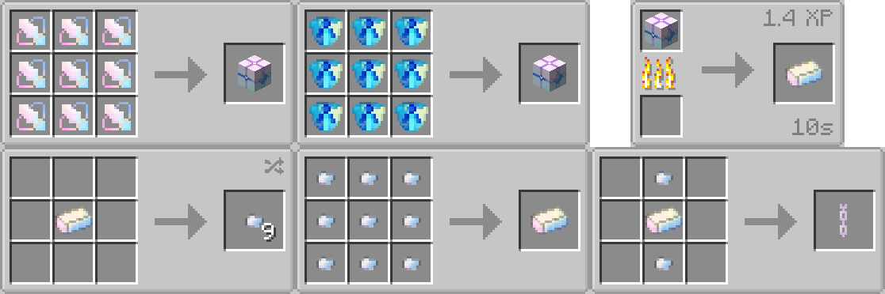
After you've got this, it'll be usefull to know, that you can also use Wishes for Wish Ingots and nuggets, but the main function is for Wishing mechanic, described right below.
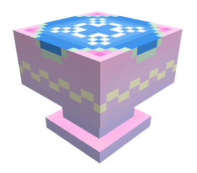
The core of GILE. Your guaranteed way to epic weapons and much more. 1 input for Wish, 1 input for any Elemental Sigil -> 1 output for Elemental or Legendary weapon, and 1 output for byproducts - Star Dust & Star Shine. As soon as 2 inputs are filled, the Wish attempt starts.
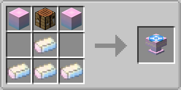
- Input Slots (2): One strictly for Wish Blocks (the fuel), and one for an Elemental Sigil (the catalyst).
- Output Slots (2): One for byproducts (Star Dust/Star Shine) and one for the successful result (Weapon).
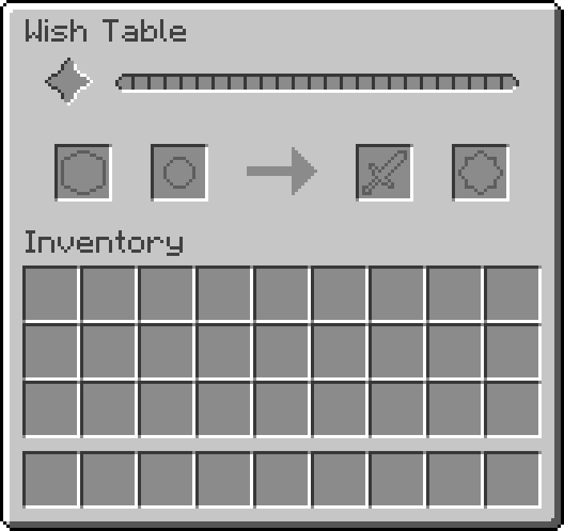
2. The Wishing Process (Attempt)
Inputting one Elemental Sigil alongside Wish Blocks will begin the wishing process. Each attempt takes 5 seconds, consumes 1 Wish Block, and yields Star Dust, but does NOT consume the Elemental Sigil.
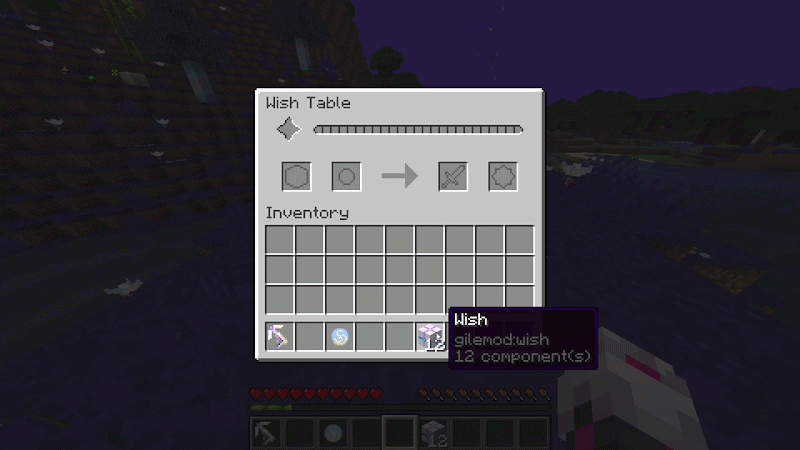
Wish Table Progress Triggered when the player inputs at least one Wish and one Elemental Sigil.During an attempt, the central star brightens and emits colored particles (visible both in the GUI and in the world). The color determines how much the progression bar fills:
| Rarity (Color) | Chance per Attempt | Progress Bar Fill % |
|---|---|---|
| Common (Blue) | 80% | 2% - 4% |
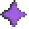 Rare (Purple) | 17% | 12% - 16% |
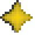 Legendary (Golden) | 3% | 36% - 48% |
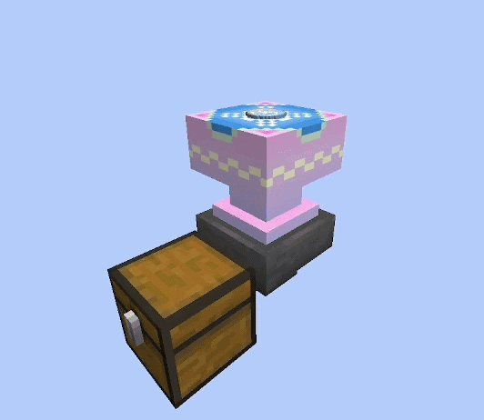
Wish Exterior particles When any attempt is successful, the Wish Table emmits a cloud of colored particles, that depends on the Star Rarity.3. Wish Completion & Rewards
Once the progression bar fills to 100%, a weapon is generated in the output slot alongside a bonus of 10 Star Shine. A pretty big cloud of particles appears then. The weapon you receive depends on a final roll based on the Elemental Sigil you used.
| Outcome | Chance | Result Details |
|---|---|---|
| Wish Success | 60% | You receive the exact Elemental Weapon corresponding to your inputted sigil (e.g., Anemo Sigil gives an Anemo Weapon). |
| Legendary Success | 20% | You receive 1 of the 4 Legendary Weapons. |
| Wish Fail | 20% | You receive a random Elemental Weapon of a different element. |
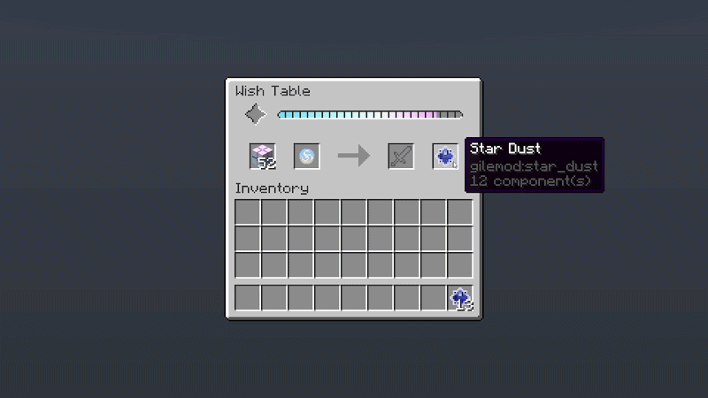
Wish completion When progress bar is filled, the wish completes. The bar then resets, table emmits some particles and you get your weapon - Elemental or Legendary.Pro Tip: Based on mathematical averages, a full stack of Wish Blocks (64) will typically yield around 4 weapons.
4. The Wisher Villager & Byproducts
The Wish Table also acts as a job site block, allowing an unemployed villager to take on the custom Wisher profession.
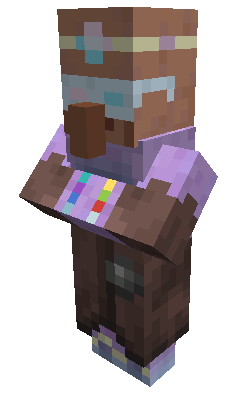
Wisher Villager
Neutral · Peaceful · Overworld × 10
20 HP
× 10
20 HP
Spawns only in vanilla villages, by breeding, or by curing Zombie Villagers.
Takes this profession when Wish Table not taken by any other Villager is near.
Has special custom trades involving star dust & star shine that you get from wishing.

| Wisher Level | First Trade (max uses / XP for trade) | Second Trade (max uses / XP for trade) | Third Trade (max uses / XP for trade) |
|---|---|---|---|
| Novice | 3 Star Dust -> 2 Moon Flowers (8 / 2) | 5 Star Shine -> 1 Wish (8 / 2) | 8 Star Dust + Book -> Enchanted Book Range I (12 / 10) |
| Apprentice | 3 Star Dust -> 1 Chrono Gear (8 / 10) | 2 Star Dust -> 1 Jar of Glitters (4 / 2) | - |
| Journeyman | 4 Star Dust -> 1 Wish Nugget (6 / 10) | 6 Star Dust -> 1 Emerald (12 / 10) | 10 Star Shine + Book -> Enchanted Book Fluttering (12 / 10) |
| Expert | 8 Star Dust -> 1 Wish (8 / 10) | 4 Star Shine -> 1 Heart of Emergency (3 / 20) | - |
| Master | 24 Star Shine -> 1 Fate Bow (1 / 30) | 24 Star Shine -> 1 Fate Sword (1 / 30) | 12 Star Shine -> 48 Fate Arrow (2 / 20) |
Example Screenshot of a possible Trades roll
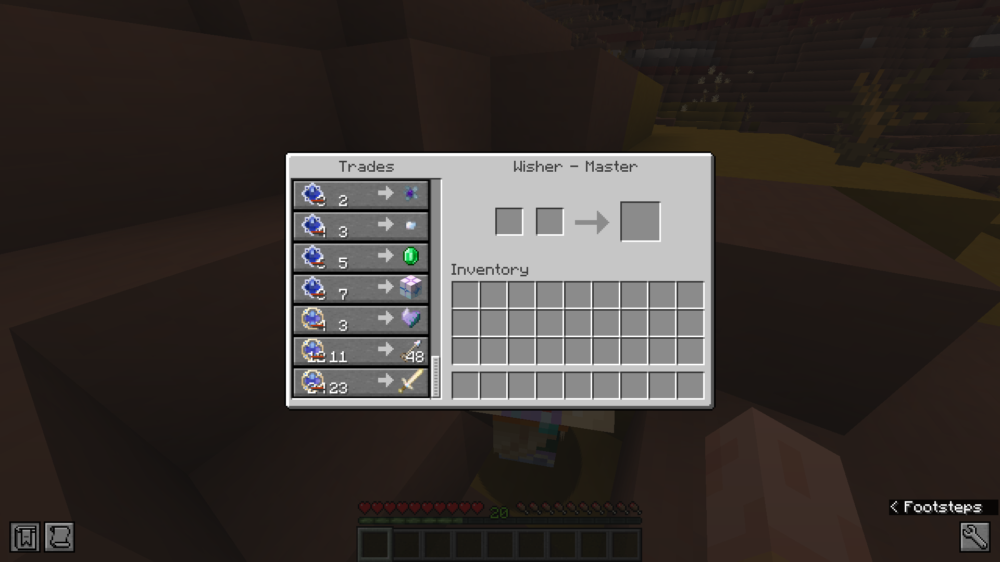
Currencies & Crafting
- Star Shine: Obtained purely from Wish Completions. Used exclusively as high-tier currency to trade with the Wisher villager.
- Star Dust: Obtained from every single Wish Attempt. Can be sold to the Wisher, or used to craft decorative Glitter Blocks and Glitter Carpets.

Star Dust is mainly used to craft Glitter Blocks. Can be crafted also by placing 3 carpets in one column on crafting grid.
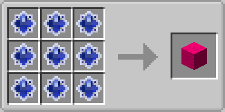

Star Dust is mainly used to craft Glitter Carpet. Or just use blocks just like in a wool carpet recipe.
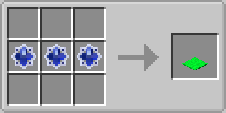
5. The Fate Weapon Set
During your wishing rolls, you may also occasionally obtain pieces of the Fate Weapon Set (Sword, Bow, and Arrow). Unlike the Elemental and Legendary weapons, the Fate set weapons are breakable (they have durability) and cannot be crafted.
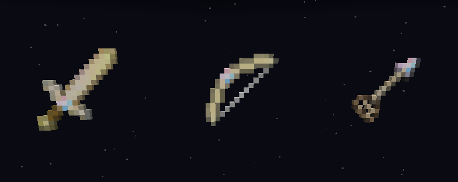
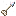
Fate Arrows can be bought from Wisher, but also crafted like right below.
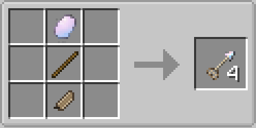
Unique On-Hit Effects
Though they break over time, they make up for it with powerful, fate-altering strikes:
- Fate Sword: Aproximatively as strong as diamond sword. Makes special effects on hit.
- Fate Bow: Shoots faster and stronger than normal bow. Can shoot any arrow, including the Fate one.
- Fate Arrow: Makes targets levitate. Can be shot only using the Fate Bow.